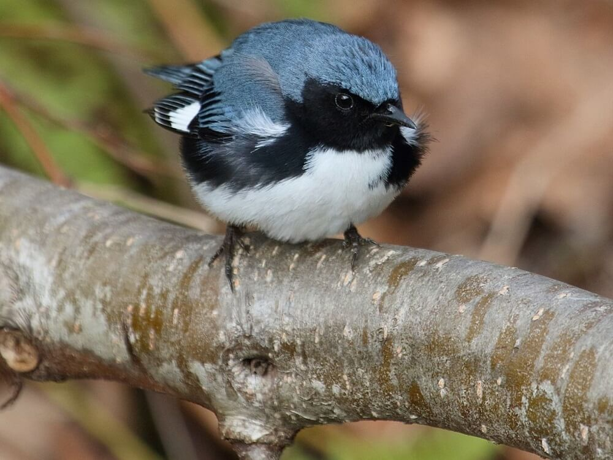

Environmental Data Initiative
How to Publish
Describe
Upload and describe your dataset then submit for review.

Review
Consider our curation comments and revise if necessary.
Publish
Publish when everything looks good and you are ready.
Notable Characteristics
- ● Metadata - We emphasize the value of full and accurate metadata
- ● Reuse - Our repo is full of high-quality long-term datasets for reuse
- ● Persistence - Published data are immutable, safe, and secure
- ● Tools - Datasets inherit tooling for next-generation research
Featured Data
Journey North – Hummingbird and Monarch Butterfly observations by volunteer community scientists across Central and North America (1996-2020): The data packages are a great example of citizen science data published and hosted in EDI. Read more
All Featured Data
In this section we regularly highlight data packages that stand out because of type of data. EDI's featured data packages
Recent News
2022 Fellowship Program
We are accepting applications from research projects and field stations interested in hosting an EDI Fellow next Summer. We anticipate supporting about 15 fellowships. The application deadline is Dec 23, 2021. Read more.

Monthly Webinar
Join us for Colin Smith's (EDI) presentation "Keep Your Science Up-to-Date with EDI Repository Event Notifications.”Nov 18, 2021 at 2pm ET. Registration information.
Normalization of Creator Names in EDI’s Data Portal
The Advanced Search feature of EDI’s Data Portal lets you select a dataset Creator name from a drop-down list of all dataset creators in our repository. We have recently created web services that implement name normalizations, and the EDI Data Portal is now using the normalized names. Read more.